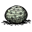
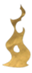

{kind=link}
{kind=link}
Chest
Wilson shivering from the cold.
Freezing is a game-mechanic which makes surviving Winter, or the heavy rainfall present in the Reign of Giants DLCs' Spring more difficult. Whenever a character is away from a heat source for too long they will begin to freeze.
Once the edges of the screen become encrusted with ice (body temperature < 5 degrees for vanilla and < 10 for RoG), this is a warning that the character is close to freezing, and the player should seek a heat source as soon as possible. When a second layer of ice crust forms over the edges (body temperature < 0 degrees), the character starts to take 1.25 damage each second. Freezing stops soon after the player finds a sufficient heat source.
Freezing can be negated by being near a sufficiently warm heat source, slowed by wearing warm Clothes, growing a Beard or stopped for a limited time by carrying a charged Thermal Stone or equipping a Torch.
Fire
The best way to have a reliable and steady source of fire is by having a Campfire, Fire Pit or a Star. A Torch won't provide much warmth but can buy a limited amount time before freezing actually settles in.
In emergencies, objects and even creatures can also be set on fire for an immediate source of warmth. A single flammable item can be dropped on the ground by holding the CTRL key and clicking the LMB. Once on the ground such items can be lit on fire with a Torch, and will provide a small and limited amount of heat. With enough fuel, small fires like this can provide enough warmth to get to a better source of heat. This might be dangerous (or advantageous) however as nearby flammable objects can catch fire as well.
One of the best options for traveling away from a fire during winter is to wear some combination of warm clothing. These items increase the amount of time a character can be away from fire before freezing begins. Having several items equipped at the same time provides a cumulative bonus. Sooner or later however, characters will be forced to return to a source of warmth, wearing insulation merely delays the time it takes before the character starts freezing.
Although Fire and warm Clothing are the best options for surviving winter, more options exist:
Freezing mechanic is based on the temperature implementation in the game. A player character has a body temperature, which ranges from -20 to 40 degrees. Any time the body temperature falls below 0 degrees, the character will take 1.25 damage per second.
Ambient temperature is a key factor influencing a character's body temperature. Body temperature will attempt to match the ambient temperature, this rate is called the ambient delta.
Ambient delta can be any value between +5 and -1. It is given by the function:
max(ambient delta, -30 / (30 + total insulation))
Total insulation is a sum of all insulation currently being worn (see table below).
Ambient delta is calculated from the total of the effect of all heat sources affecting the player (including the weather, hot objects in the world such as campfires, and hot objects carried in inventory or equipped, such as Thermal Stones and lit torches), and is also a function of the player's current temperature.
The net temperature effect of a heat source depends on its distance from the player and its raw source temperature (listed in the Heat Sources table below), referred to as its source temperature:
In other words, the net temperature effect for each source is given by the equation:
net temperature effect = max(source temperature - body temperature,0) + min(source temperature, 0)
The starting point for the ambient delta is the current air temperature, as determined by the weather.
For each heat source, the player's body temperature is first subtracted from the heat source's source temperature, and then added to the delta. Carried or equipped heat sources have a source temperature equal to its raw source temperature. For environmental heat sources (e.g. fireplace), source temperature will decrease as the distance between it and the player increases.
If the ambient delta is greater than zero (i.e. the environment is warmer than the player's current body temperature), then the maximum increase of the player's body temperature will be +5 degrees per second while the player's body temperature is below the freezing point (0 degrees), and +1 per second once the player's body temperature is warmer than the freezing point. Note that the increase of the player's body temperature cannot exceed the delta, so the actual rate may be smaller than +5 or +1.
The final equation for calculating ambient delta is given here:
ambient delta = min(warming cap, sum(net temperature effects))
where warming cap is 5 if the player's body temperature below zero and 1 if the player's body temperature is above zero.
Insulation only becomes a factor if the ambient delta is less than zero (i.e. all ambient heat carried and in the environment is still colder than the player's body temperature), in which case it operates as per the formula for ambient delta above. Insulation provides exponentially less and less protection from cold, so the first item worn makes the biggest difference by far.
| Item | Insulation | Slot |
|---|---|---|
| 60 | Head | |
| 60 | Chest | |
| 60 | Chest | |
| 60 | Head | |
| 120 | Head | |
| 120 | Head | |
| 240 | Head | |
| 240 |
Chest | |
| 240 | Chest | |
| Magnificent Beard (depending on length, Wilson only) | 0 / 15 / 45 / 135 | Face |
| | 0 / 11.25 / 33.75 / 101.25 | Face |
The warmest combination is the Puffy Vest, Beefalo Hat and a fully grown beard (if you are Wilson). This will add up to a whopping 615 points of insulation. With a fully charged Thermal Stone and a torch equipped you can have a mobile heat source almost as hot as a stage 1 Campfire.
For the purpose of calculating a Thermal Stone's own temperature loss a fixed insulation of 120 is used. This value is NOT added to the player's total insulation, nor does the player's insulation affect the Thermal Stone in any way. A Thermal Stone cools at the same rate on the ground as it does in the inventory.
| Heat Source | Temperature | Duration |
|---|---|---|
| 5 | Infinite | |
| 5 | 75 sec (affected by rain) | |
| Small character fire | 50 | 6 sec |
| Medium character fire | 65 | 8 sec |
| Large character fire | 80 | 10 sec |
| Small burnable object | 70 | 3 - 30 sec |
| Medium burnable object | 120 | 10 - 30 sec |
| Large burnable object | 180 | 15 sec |
| Burning Evergreen | 220 | 15 sec |
| 70 | variable (affected by rain) | |
| 120 | variable (affected by rain) | |
Star | 180 | variable (affected by rain) 2 min for Star |
| 220 | variable (affected by rain) | |
| Thermal Stone stage 1 | -20 - 0 | variable |
| 0 - 25 | variable | |
| Thermal Stone stage 3 | 25 - 40 | variable |
| Thermal Stone stage 4 | 40 - 50 | variable |
| Thermal Stone stage 5 | 50 - 60 | variable |
|  (Willow only) | 20 | 4-8 sec |
For full list of burnable objects see Fire.
| Gameplay Mechanics | |
| Activities | Cooking • Crafting • Farming • Fishing • Sleeping |
| Environment | Day-Night Cycle • Moon Cycle • Nightmare Cycle • Earthquake • Lightning • Rain |
| Seasons | Summer • Winter • ( Autumn • Spring ) |
| Mechanics | Beard • Characters • Controls • Death • Durability • Experience • Fire • Food Spoilage • Freezing ( Overheating ) • Health • Hunger • Light • Map • Naughtiness • Non-renewable resources • Sanity • Saving (Wetness) |
| Mode | Adventure Mode • Sandbox Mode • Caves • Ruins |
| Others | Pig Village • Road (Trail) • Set Piece • Things |
{kind=link}